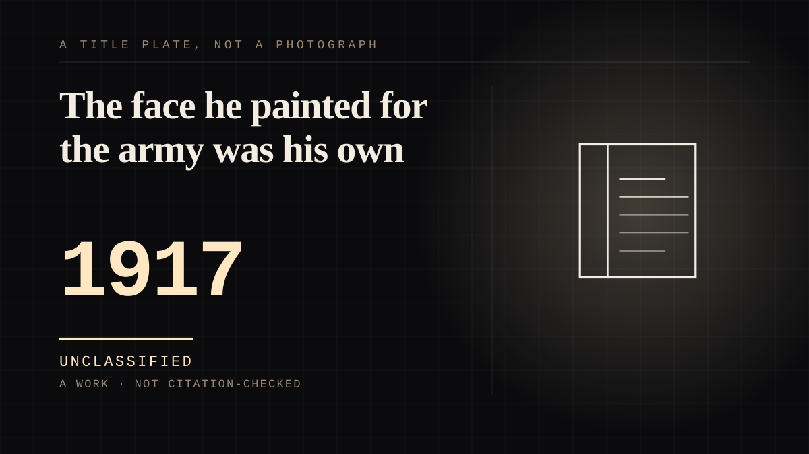

A work · 1917 ·
The face he painted for the army was his own
James Montgomery Flagg drew the most famous recruiting poster in the world and modelled the figure from a mirror - so the finger points at you with the artist's own face.

The mechanism is the address: three words, second person, no name. 'I Want YOU for U.S. Army.' The image began as the cover of Leslie's Weekly on 6 July 1916, titled 'What Are You Doing for Preparedness?', while America argued about the war in Europe. When the country entered the war in April 1917 the copyright passed to the government, the caption changed to the three words, and the presses ran - more than four million copies printed in 1917 and 1918 alone, and the poster was pulled out again for the Second World War. The pose was borrowed from the British recruiting poster of Lord Kitchener, which pointed in the same direction; the figure was Uncle Sam, a personification with no biography and no private life to disappoint anybody. And the face was James Montgomery Flagg's own. He modelled it in a mirror, adding wrinkles and grey hair, and admitted the choice later when he presented a copy to President Roosevelt - he had been his own model, he said, to save the modelling fee. A poster is the one medium in this corpus where the second person is aimed at millions and received alone. One design, addressed to every man in the country, greeting each of them as an individual summons; there was never any way to write back, and none was expected, because the intended answer was the reader's body, in person, at a recruiting depot. Uncle Sam's eyes have been met by more people than any performer who lived in his own century, and under the hat is a commercial illustrator who saved himself the modelling fee.
Where it sits
1900 1900-1949 · 1917 1949
Provenance · 4 source record(s)
- retrievableThe image first appeared as the cover of Leslie's Weekly, 6 July 1916, titled 'What Are You Doing for Preparedness?'; more than four million copies printed in 1917-1918; the design reissued during the Second World War; Flagg's own description of it as 'the most famous poster in the world'.Library of Congress. 'I Want You.' Echoes of the Great War: American Experiences of World War I (exhibition). ↗
- retrievableFlagg's drawing adapted from the pose and language of the earlier British Lord Kitchener recruiting poster; the direct address to the viewer; four million posters printed in 1917-1918 and reuse in the Second World War; the Smithsonian's holdings of the original drawing and related materials.National Museum of American History. 'Uncle Sam: The man and the meme.' 13 September 2013. ↗
- retrievableThe Leslie's Weekly 6 July 1916 cover in the context of the Preparedness Movement; the copyright transferred to the government and the caption changed to 'I Want You' when the United States entered the war in April 1917.PBS American Experience. '"I Want You," Remixed.' 24 February 2017. ↗
- retrievableFlagg drew the face using his own reflection as a model, adding wrinkles and grey hair; the pose drawn from the British Kitchener poster; nearly four million copies printed in 1917-1918.Teaching American History. 'Recruitment Poster: I Want YOU for U.S. Army.' 2 August 2024. ↗
Connected · 3 out, 0 in
It sits in